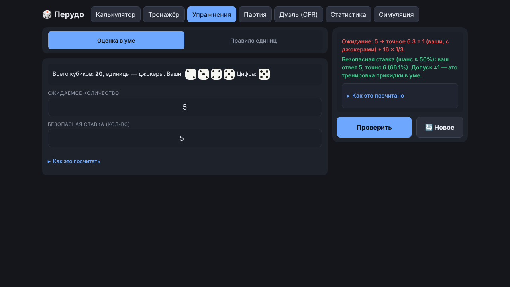
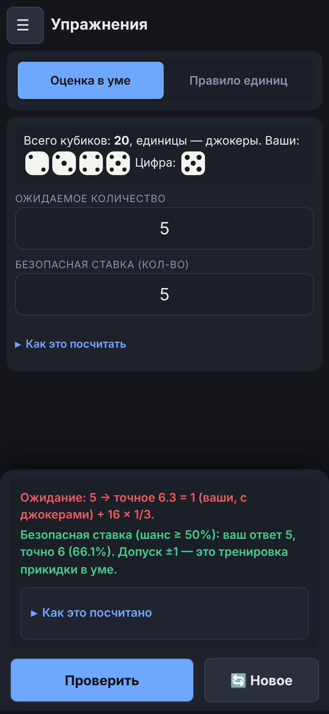

Руководство / Упражнения
Упражнения
Две тренировки счёта в уме. Каждый ответ проверяется сразу, а под вопросом лежит подсказка «Как это посчитать».
Оценка в уме
Нужно ответить на два вопроса: сколько кубиков с нужной цифрой ожидать на столе (число с дробью) и какая ставка «безопасна» (шанс не ниже 50%).
- Ожидание считается как свои + чужие × шанс, где шанс равен 1/3 для обычной цифры и 1/6 для единиц.
- Безопасная ставка — это ожидание, округлённое к ближайшему целому (ровно посередине — вниз). Для 0–60 чужих кубиков это совпадает с точным расчётом, и один и тот же приём работает и на большом, и на малом столе.
- В упражнении есть свёрнутая памятка «Как прикинуть в уме» с примером, а после ответа — разбор шагами с числами вашей задачи.
Правило единиц
Какое минимальное количество нужно назвать при переходе на единицы (половина с округлением вверх) и при переходе с единиц на другую цифру (удвоить и прибавить один). Это то самое правило из правил игры, только в виде тренировки.

Как проверяются ответы
- Кнопка «Новое» выдаёт другой вопрос.
- Допуск при проверке ±1: это тренировка прикидки в уме, а не точного счёта.
- Если ответ выше безопасного, он принимается по допуску, но разбор добавляет строку про шанс, например: «принята по допуску, но шанс 38% — меньше 50%; безопасная — 6 (61%)».
- Бывает, что безопасной ставки нет (мало чужих кубиков, ставка на единицы). Тогда правильный ответ 0, и разбор так и говорит.
Что считается попыткой. Одна задача — одна запись в статистике. Пустой, нечисловой или дробный ответ (где нужно целое число) не засчитывается: приложение просит ввести ответ. После проверки кнопка «Проверить» недоступна до нажатия «Новое».
На телефоне
Проверка и разбор находятся в панели у нижнего края экрана. Подробный разбор раскрывается внутри неё.
